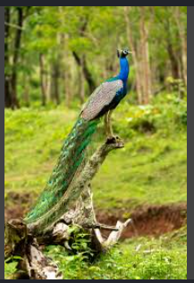

The peacock is India's national bird. It was selected as the country's national bird on January 26, 1963. The peacock is one of the most beautiful birds in the world. It is famous for its colorful feathers and graceful dancing style. Peacock can be found across India and is a sight to behold. Its beauty impresses everyone.

"The peacock has become
of my regular sources
of inspiration from nature."
- Matthew Williamson